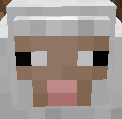

There are lost of different mobs in minecraft, some are passive while others are hostile. On this pagewe will be talking about some of the different kinds of mobs you will enounter when exploring the game.
The sheep is a passive mob that roams around in grassy biomes. You can feed the sheep wheat and breed sheep with wheat as well. Sheep can be shared with shears to collect their wool, they will drop 1-3 wool when sheared. If you kill a sheep it will drop 1-3 raw mutton and 1 wool.
The creeper is a hostile mob that spawns at night or in very dark places. If you are to close to a creeper it will run towards you and then it gets ready to explode. When a creeper is about to explode you can run away and it will stop exploding or you can kill it before it explodes. When killed a creeper drops 0-2 gunpowder.
The wolf are a neutral mob that only attacks when attacked. Wolves can be tammed with bones. A tammed wolf will be passive to the player and protect theplayer when attcked. You can feed wolves meat to regain their health. wolfs drop nothing when killed.
The zombie is a hostile mob that spawns at night or dark plaeces. when zombies are killed they drop 0-2 rotten flesh and sometimes they drop what their wearing or holding. These is also a rare chance they drop a iron ingiot, carrot or potato.